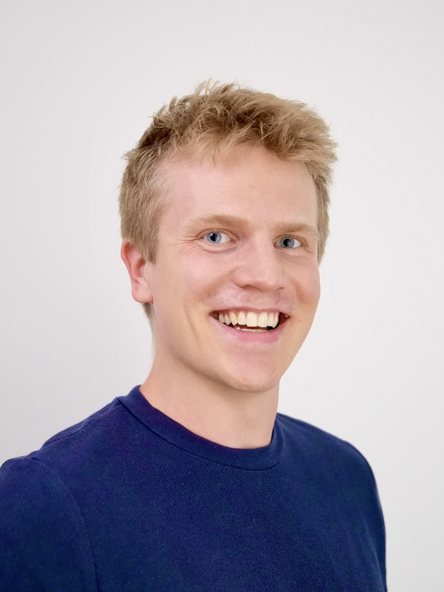

Social & Vertical Content
Bild- und Videomaterial, das im Feed sofort stoppt — fertig geschnitten und direkt einsetzbar.
- Fertige 9:16 Reels & TikToks
- Sound-Design & Beat-Sync
- Bildmaterial für Carousels & Storys
- Batch-Produktion für mehrere Wochen
MULB ist ein Studio für Fotografie und Video in Wien. Modernes Storytelling, professionelles Handwerk und verlässliche Umsetzung.
Keine theoretischen Konzepte, sondern fertige Dateien, die direkt online gehen oder in den Druck können.
Bild- und Videomaterial, das im Feed sofort stoppt — fertig geschnitten und direkt einsetzbar.
Die Stimmung des Abends so eingefangen, wie sie sich angefühlt hat — roh, energiegeladen und schnell geliefert.
Visuelle Bildwelten mit klarer Handschrift — für Kollektionen, Lookbooks und Markenkampagnen.
Ungestellt, diskret im Hintergrund und mit Gespür für die Momente zwischen den großen Gesten.
Jedes Paket als Foto, Film oder beides — Umfang und Aufwand stimmen wir im Vorgespräch ab.
Drei klare Schritte — von der ersten Idee bis zum fertigen Material.
Wir stimmen Wünsche, Stil und Rahmenbedingungen ab — unkompliziert per kurzem Call oder auf einen Kaffee in Wien.
Am Tag selbst bin ich vorbereitet und flexibel — im Studio, auf Location oder mitten im Event.
Auswahl, Schnitt und Farbkorrektur im MULB-Look — geliefert in allen Formaten, die du brauchst.

Hinter MULB stehe ich, Martin Ulbrich — Fotograf und Filmemacher aus Wien. Ob Konzert, Fashion-Editorial oder euer Hochzeitstag: Ich arbeite ruhig, aufmerksam und mit einem Auge für die Momente, die man nicht inszenieren kann.
Mein Anspruch: Bilder und Clips, die nicht nur schön aussehen, sondern eure Geschichte erzählen — modern geschnitten und verlässlich geliefert.
Behind the Scenes auf InstagramMein Studio sitzt in Wien. Shootings und Drehs übernehme ich in Wien und ganz Österreich.
Einen schnellen Teaser für Social Media liefere ich bei Events innerhalb von 24 Stunden, erste Hochzeits-Highlights innerhalb von 48 Stunden. Den genauen Zeitplan für das fertige Material besprechen wir vorab.
Ob und in welcher Form Rohmaterial dazugehört, klären wir im Vorgespräch. Schreib mir einfach, was du brauchst.
Nach dem kostenlosen Erstgespräch stimmen wir Termin und Umfang ab. Details zur Buchung und zu einer möglichen Anzahlung bekommst du von mir persönlich.
Erzähl mir von deinem Projekt — ich melde mich innerhalb von 24 Stunden mit einer ersten Einschätzung.
Auf Instagram zeige ich Rohschnitte, Locations und neue Arbeiten, bevor sie hier landen.